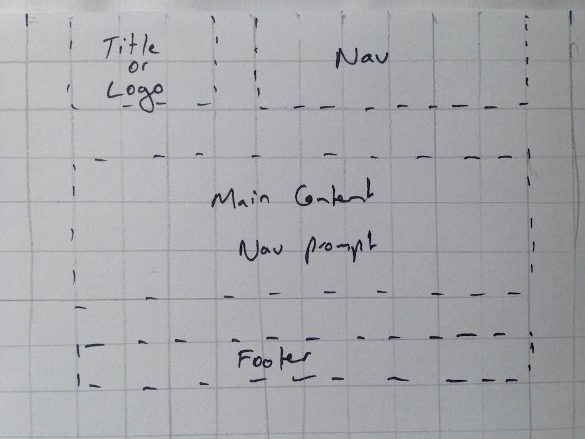
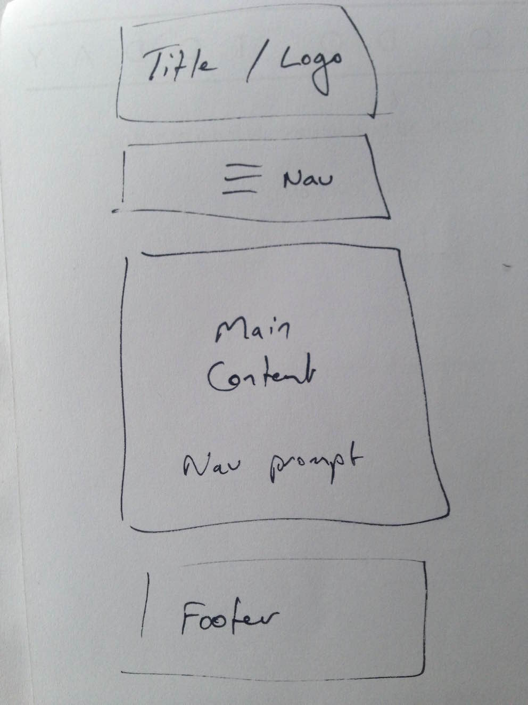
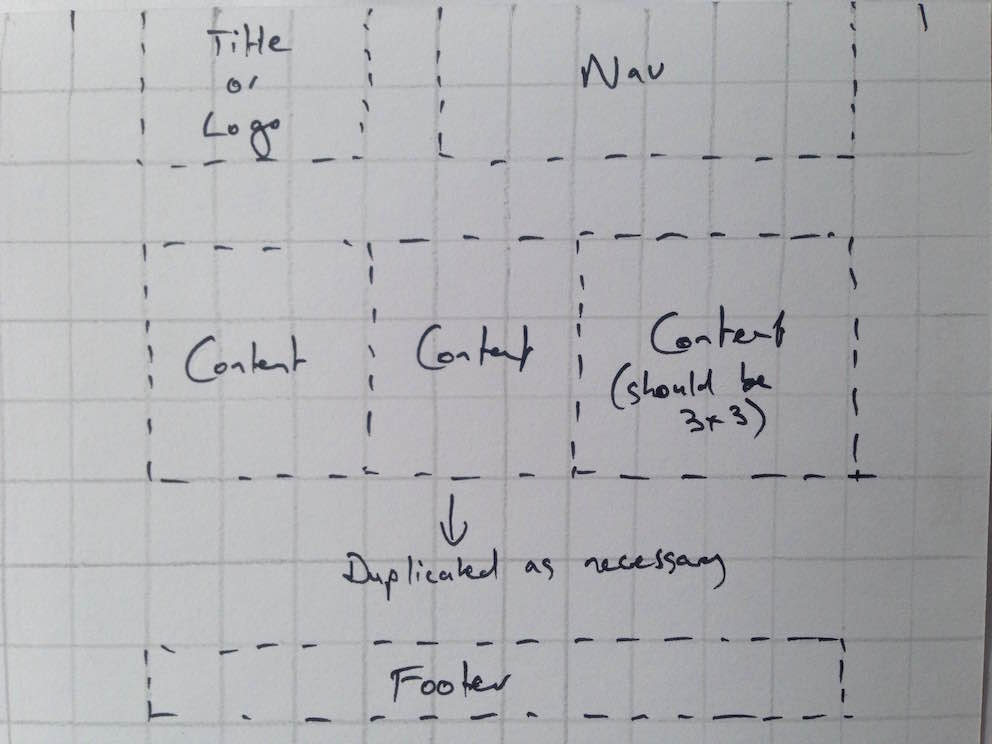
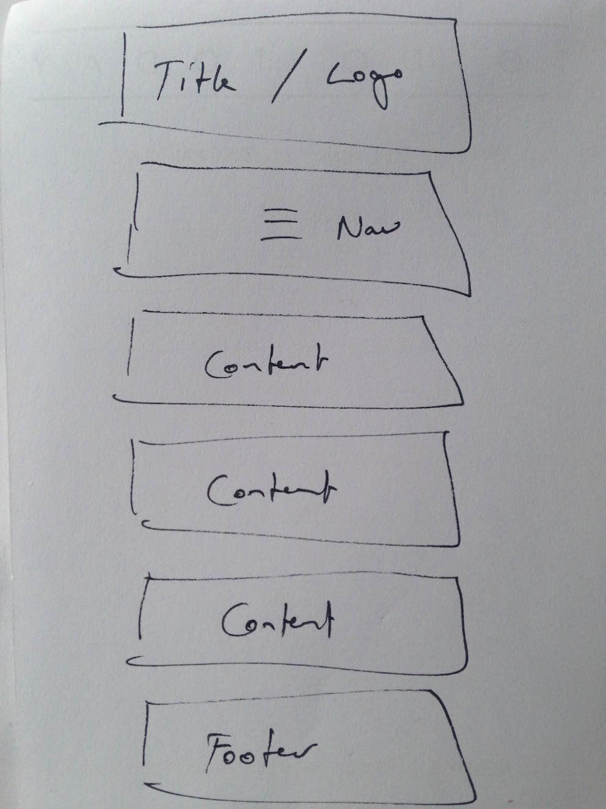

Responsiveness is when the content of a webpage automatically changes to suit different screen sizes. It's important because there are a wide range of screen sizes in use, and the optimum user experience will demand re-arrangement of content and styling
Mobile first is where the site is built initially for a small screen size. This focuses the developers and designers on optimising content and functionality for a small screen. Later, the content is optimised for larger screens. This contrasts with the approach of first building the for a larger desktop sized screen, and then later trying to modify the content for smaller screens.
Mobile first is important because an increasing amount of traffic is via mobile rather than desktop or larger devices. The functionality available on mobile can be quite different, such as no ability to hover over a button. And a mobile user may be seeking different information, such as opening hours, maps, or contact information, without having to go digging around the site.
Frameworks are code that you can copy / paste into your site to provide an out of the box code base. This week we were focussing on front end frameworks, so we were looking at CSS files that we can integrate via links in our HTML files. They're a handy shortcut rather than having to build up things like grid patterns for each website.
Frameworks save time. The popular ones are maintained and evolved by a community of users. And they are useful for teaching best practice and tricks that can be absorbed over time by beginners. In terms of downside, they're a shortcut so they may slow learning of some of the basic concepts.
Wireframes are sketches of a website. They're useful to help visualise the website before building it, and they force us to logically think through the required content on a page. We use them because time spent planning typically saves more time writing code.
Index page - desktop
Index page - mobile
Blog page - desktop
Blog page - mobile
I hadn't thought through the blog structure properly. So my estimate of time was waaaaaay off.